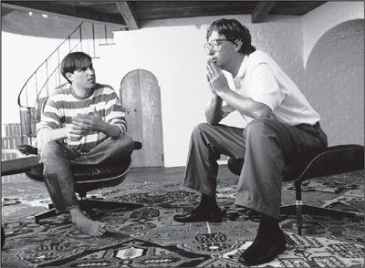

Jobs and Gates, 1991
In astronomy, a binary system occurs when the orbits of two stars are linked because of their gravitational interaction. There have been analogous situations in history, when an era is shaped by the relationship and rivalry of two orbiting superstars: Albert Einstein and Niels Bohr in twentieth-century physics, for example, or Thomas Jefferson and Alexander Hamilton in early American governance. For the first thirty years of the personal computer age, beginning in the late 1970s, the defining binary star system was composed of two high-energy college dropouts both born in 1955.
在天文学中，当两颗星体轨道交织，由于引力相互作用，就会出现双星系统。在人类历史上也有类似情形，同领域两位超级巨星之间的关系与竞争谱写出他们所属的时代之音。例如，20世纪物理学界的两位巨匠阿尔伯特·爱因斯坦和尼尔斯·玻尔（NielsBohr）,以及美国建国初期的政治家托马斯·杰斐逊（ThomasJefferson）和亚历山大·汉密尔顿（AlexanderHamilton）。20世纪70年代末，人类步入了个人电脑时代。在其发展的头30年中，出现了两位重量级人物，他们都生于1955年，都中途辍学，精力充沛，他们演绎了个人电脑领域的“双星系统”。
Bill Gates and Steve Jobs, despite their similar ambitions at the confluence of technology and business, had very different personalities and backgrounds. Gates’s father was a prominent Seattle lawyer, his mother a civic leader on a variety of prestigious boards. He became a tech geek at the area’s finest private school, Lakeside High, but he was never a rebel, hippie, spiritual seeker, or member of the counterculture. Instead of a Blue Box to rip off the phone company, Gates created for his school a program for scheduling classes, which helped him get into ones with the right girls, and a car-counting program for local traffic engineers. He went to Harvard, and when he decided to drop out it was not to find enlightenment with an Indian guru but to start a computer software company.
这就是比尔·盖茨与史菴夫·乔布斯。尽管两人对技术和商业的融合都抱有相似的雄心，但是他们背景不同，个性迥异。盖茨的父亲是西雅图一位杰出的律师，母亲是一名民众领袖，并担任众多著名机构的董事。他就读于当地最好的私立学校湖滨中学（LakesideHigh），并从此走上技术极客的道路。但盖茨绝称不上反叛者、嬉皮士和灵性追寻者，也不是反主流文化人士。他没有做过“蓝盒子”去盗用电话线路，而是为学校编写排课程序，在这个程序的帮助下，他得以和自己心仪的女孩上同样的课程；他还为当地交通管理部门编写了一个车辆计数程序。进入哈佛大学之后不久，盖茨决定綴学，但并非因为要跟随印度灵性导师寻求启蒙，而是为了创立自己的软件公司。
Gates was good at computer coding, unlike Jobs, and his mind was more practical, disciplined, and abundant in analytic processing power. Jobs was more intuitive and romantic and had a greater instinct for making technology usable, design delightful, and interfaces friendly. He had a passion for perfection, which made him fiercely demanding, and he managed by charisma and scattershot intensity. Gates was more methodical; he held tightly scheduled product review meetings where he would cut to the heart of issues with lapidary skill. Both could be rude, but with Gates—who early in his career seemed to have a typical geek’s flirtation with the fringes of the Asperger’s scale—the cutting behavior tended to be less personal, based more on intellectual incisiveness than emotional callousness. Jobs would stare at people with a burning, wounding intensity; Gates sometimes had trouble making eye contact, but he was fundamentally humane.
与乔布斯不同，盖茨懂计算机编程；他更务实、更有原则，且拥有很强的分析处理能力。乔布斯则更相信直觉，更浪漫，并且在技术实用化、设计愉悦感和界面友好方面有着更高的天分。乔布斯狂热地追求完美，以致他为人非常苛刻，他的管理主要依靠自身的领袖魅力和四溢的激情。盖茨更有条理；他会频繁召开产品评估会议，并在会上精准地切入问题核心。乔布斯和盖茨都可能做出粗鲁无礼的举动，但是盖茨的无礼刻薄通常并不针对个人，更多的是出于对技术的深刻理解，而非情感上的麻木不仁。在职业生涯的早期，盖茨似乎就和那些典型的极客一样，有些阿斯伯格综合征的倾向。乔布斯会用能灼伤人的眼神盯着对方，而盖茨有时会无法与人进行眼神接触，但他很富有人情味儿。
“Each one thought he was smarter than the other one, but Steve generally treated Bill as someone who was slightly inferior, especially in matters of taste and style,” said Andy Hertzfeld. “Bill looked down on Steve because he couldn’t actually program.” From the beginning of their relationship, Gates was fascinated by Jobs and slightly envious of his mesmerizing effect on people. But he also found him “fundamentally odd” and “weirdly flawed as a human being,” and he was put off by Jobs’s rudeness and his tendency to be “either in the mode of saying you were shit or trying to seduce you.” For his part, Jobs found Gates unnervingly narrow. “He’d be a broader guy if he had dropped acid once or gone off to an ashram when he was younger,” Jobs once declared.
“两个人都觉得自己比对方聪明，但是史蒂夫总体上认为比尔比自己稍逊一筹，尤其在品位和风格上，”安迪·赫茨菲尔德说道，“比尔瞧不起史蒂夫则是因为史蒂夫不会编程。”从两人结识起，盖茨就被乔布斯所吸引，并有些嫉妒他蛊惑人心的能力。但同时，他也认为乔布斯“极其古怪”，而且“作为一个人，有着奇特的缺陷”。盖茨反感乔布斯的无礼，以及他的那种倾向——“不是觉得你狗屁不如，就是在试图引诱怂恿你”。而在乔布斯看来，盖茨太狭隘。乔布斯曾说：“如果他年轻的时候嗑过药或是进行一下禅修，那整个人的心胸就会更为开阔。”
Their differences in personality and character would lead them to opposite sides of what would become the fundamental divide in the digital age. Jobs was a perfectionist who craved control and indulged in the uncompromising temperament of an artist; he and Apple became the exemplars of a digital strategy that tightly integrated hardware, software, and content into a seamless package. Gates was a smart, calculating, and pragmatic analyst of business and technology; he was open to licensing Microsoft’s operating system and software to a variety of manufacturers.
个性和性格上的差异，终究使他们走上了对立面并引发了数字时代的根本分立。乔布斯是个完美主义者，渴望掌控一切，并且很享受艺术家这种不妥协不让步的性情；他和苹果公司将硬件、软件和内容无缝整合，铸成一体，这种数字化战略堪称典范。盖茨则是商业和技术领域里精明务实、深谋远虑的分析师。他愿意将微软的操作系统和软件授杈给各种不同的制造商使用。
After thirty years Gates would develop a grudging respect for Jobs. “He really never knew much about technology, but he had an amazing instinct for what works,” he said. But Jobs never reciprocated by fully appreciating Gates’s real strengths. “Bill is basically unimaginative and has never invented anything, which is why I think he’s more comfortable now in philanthropy than technology,” Jobs said, unfairly. “He just shamelessly ripped off other people’s ideas.”
两人相识30年后，盖茨对乔布斯产生了有所保留的敬意。“他真的对技术了解不多，但他有一种惊人的天赋，知道什么东西能成功。”盖茨说道。但反过来，乔布斯从来没有充分肯定过盖茨的长处。“比尔基本上缺乏想象力，也从没创造过什么东西，这就是为什么我觉得他更适合像现在这样做慈善，而不是留在技术领域。”乔布斯是这么说的，尽管他的说法并不公允，“他只是无耻盗用别人的想法。”
When the Macintosh was first being developed, Jobs went up to visit Gates at his office near Seattle. Microsoft had written some applications for the Apple II, including a spreadsheet program called Multiplan, and Jobs wanted to excite Gates and Co. about doing even more for the forthcoming Macintosh. Sitting in Gates’s conference room, Jobs spun an enticing vision of a computer for the masses, with a friendly interface, which would be churned out by the millions in an automated California factory. His description of the dream factory sucking in the California silicon components and turning out finished Macintoshes caused the Microsoft team to code-name the project “Sand.” They even reverse-engineered it into an acronym, for “Steve’s amazing new device.”
当苹果开始着手研发麦金塔电脑时，乔布斯前去拜访盖茨。微软曾为苹果的AppleII电脑编写过一些应用程序，其中包括名为“Multiplan”的电子表格程序。这一次，乔布斯想鼓动盖茨和微软为其即将推出的麦金塔电脑编写更多程序。坐在盖茨位于西雅图华盛顿湖边的会议室中，乔布斯勾画出一幅诱人的图景——加利福尼亚的某家自动化工厂将会大批量生产界面友好的大众电脑。在他的描述中，眭元件被送进工厂，完整的麦金塔电脑鱼贯而出。微软团队因此给该项目取了个代号，叫“沙”（Sand）①。他们甚至又把它演绎成了一旬话的缩略词：史蒂夫的神奇新机器（Steve-sAmazingNewDevice）。
Gates had launched Microsoft by writing a version of BASIC, a programming language, for the Altair. Jobs wanted Microsoft to write a version of BASIC for the Macintosh, because Wozniak—despite much prodding by Jobs—had never enhanced his version of the Apple II’s BASIC to handle floating-point numbers. In addition, Jobs wanted Microsoft to write application software—such as word processing and spreadsheet programs—for the Macintosh. At the time, Jobs was a king and Gates still a courtier: In 1982 Apple’s annual sales were $1 billion, while Microsoft’s were a mere $32 million. Gates signed on to do graphical versions of a new spreadsheet called Excel, a word-processing program called Word, and BASIC.
盖茨创立微软，是源于为阿尔泰计算机编写BASIC语言版本（BASIC是Beginner-sAll-purposeSymbolicInstructionCode的缩写，即初学者通用符号指令代码，是一种编程语言，非技术人员能够用它更容易地编写出可以跨平台运行的软件程序）。乔布斯希望微软为麦金塔电脑编写BASIC程序5因为尽管乔布斯多次敦促，沃兹尼亚克从未改进AppleII的BASIC语言版本以提髙处理浮点数的能力。此外，乔布斯还希望微软能为麦金塔电脑编写一些应用软件，如文字处理软件、图表和电子表格程序。盖茨签下了合同，除BASIC程序外，还为苹果公司开发图形界面版本的软件——文字处理程序Word和全新的电子表格软件Excel。
Gates frequently went to Cupertino for demonstrations of the Macintosh operating system, and he was not very impressed. “I remember the first time we went down, Steve had this app where it was just things bouncing around on the screen,” he said. “That was the only app that ran.” Gates was also put off by Jobs’s attitude. “It was kind of a weird seduction visit, where Steve was saying, ‘We don’t really need you and we’re doing this great thing, and it’s under the cover.’ He’s in his Steve Jobs sales mode, but kind of the sales mode that also says, ‘I don’t need you, but I might let you be involved.’”
当时，乔布斯已功成名就，盖茨还只是个跟班：1984年，苹果公司的年销售额达15亿美元，而微软只有1亿美元。因此，盖茨前往库比蒂诺观看麦金塔操作系统的演示，同行的还有三位微软的同事，其中包括查尔斯·西蒙尼（CharlesSimonyi）,他曾在施乐工作。由于麦金塔电脑当时还没有完整可用的样机，安迪·赫茨菲尔德只能在丽萨电脑上运行麦金塔软件，并通过麦金塔电脑样机的屏幕进行显示。
盖茨并没有觉得自己看到的东西有多了不起。“我记得第一次去的时候，史蒂夫运行了一个应用程序，不过就是一些东西在屏幕上跳来跳去，”他回忆说，“这是唯一能够在他们机器上运行的应用程序。当时MacPaint②还未完成。”此外，乔布斯的态度也令盖茨反感。“我们此行有点儿被诱骟的诡异感觉。史蒂夫说，我们也不是真的需要你们，我们正在做的这个东西很伟大，它还处于保密之中。这是他自己惯用的销售方式，潜台词是‘我不需要你，但可能会让你参与进来。’”
The Macintosh pirates found Gates hard to take. “You could tell that Bill Gates was not a very good listener. He couldn’t bear to have anyone explain how something worked to him—he had to leap ahead instead and guess about how he thought it would work,” Hertzfeld recalled. They showed him how the Macintosh’s cursor moved smoothly across the screen without flickering. “What kind of hardware do you use to draw the cursor?” Gates asked. Hertzfeld, who took great pride that they could achieve their functionality solely using software, replied, “We don’t have any special hardware for it!” Gates insisted that it was necessary to have special hardware to move the cursor that way. “So what do you say to somebody like that?” Bruce Horn, one of the Macintosh engineers, later said. “It made it clear to me that Gates was not the kind of person that would understand or appreciate the elegance of a Macintosh.”
麦金塔团队的“海盗们”也觉得盖茨令人难以忍受。“你会发现，比尔·盖茨不是个很好的听众——他不接受任何人向自己解释某个东西如何运作，他要抢在别人前面提出他对这个东西如何运转的推断，猜想他觉得这个是怎么运作的。”赫茨菲尔德回忆道。他们向盖茨展示麦金塔电脑的光标如何不闪烁而能在屏幕上流畅地移动。盖茨发问你们用什么硬件来绘制光标？”赫茨菲尔德感到非常自豪，因为他们只依靠软件就实现了这个功能。他回答说：“我们没有用任何特殊的硬件！”盖茨不信，坚持认为必须有某种特殊硬件的支持，光标才会出现这样的移动效果。麦金塔团队的一位工程师布鲁斯·霍恩后来说：“你还能跟这样的人说什么呢？这件事让我明白，盖茨不是那种能够理解或欣赏麦金塔电脑优雅之处的人。”
Despite their mutual wariness, both teams were excited by the prospect that Microsoft would create graphical software for the Macintosh that would take personal computing into a new realm, and they went to dinner at a fancy restaurant to celebrate. Microsoft soon dedicated a large team to the task. “We had more people working on the Mac than he did,” Gates said. “He had about fourteen or fifteen people. We had like twenty people. We really bet our life on it.” And even though Jobs thought that they didn’t exhibit much taste, the Microsoft programmers were persistent. “They came out with applications that were terrible,” Jobs recalled, “but they kept at it and they made them better.” Eventually Jobs became so enamored of Excel that he made a secret bargain with Gates: If Microsoft would make Excel exclusively for the Macintosh for two years, and not make a version for IBM PCs, then Jobs would shut down his team working on a version of BASIC for the Macintosh and instead indefinitely license Microsoft’s BASIC. Gates smartly took the deal, which infuriated the Apple team whose project got canceled and gave Microsoft a lever in future negotiations.
尽管两队人马互有戒心，但想到微软为麦金塔电脑制作图形界面软件，能将个人电脑带入一个新境界，双方都非常兴奋，他们前往一家豪华餐厅吃饭庆祝。微软很快组建了一个型团队负责这个项目。“我们在Mac项目上的人比苹果公司的还多广盖茨说道，“他们有大约十四五个人，我们有将近二十人。我们真的把命都押在这上面了。”尽管乔布斯觉得他们没什么品位，但微软的程序员们非常坚持不懈。“他们一开始做出的应用程序很糟糕，”乔布斯回忆说，“但是他们坚持努力，越做越好。”最后，乔布斯对Excel非常喜爱，以至于和盖茨作了个秘密协议：如果微软在未来两年的时间里只为麦金塔做Excel，而不开发个人电脑版本，那么乔布斯就同意撤掉麦金塔电脑的BASIC团队，而无限期使用微软开发的BASIC程序。盖茨精明地接受了这一提议，而此事却激怒了苹果公司遭到解散的BASIC团队，也让微软在日后的谈判中获得了优势。
For the time being, Gates and Jobs forged a bond. That summer they went to a conference hosted by the industry analyst Ben Rosen at a Playboy Club retreat in Lake Geneva, Wisconsin, where nobody knew about the graphical interfaces that Apple was developing. “Everybody was acting like the IBM PC was everything, which was nice, but Steve and I were kind of smiling that, hey, we’ve got something,” Gates recalled. “And he’s kind of leaking, but nobody actually caught on.” Gates became a regular at Apple retreats. “I went to every luau,” said Gates. “I was part of the crew.”
盖茨和乔布斯暂时结下了良好的关系。那年夏天，他们前往威斯康星州日内瓦湖的花花公子俱乐部，参加行业析师本·罗森（BenRosen）举办的一个会议。当时没人知道苹果正在开发图形界面。盖茨回忆：“当时所有人好像都觉得个人电脑就是一切。这样很好。但是史蒂夫和我就暗自得意，嘿，我们也有个好东西。当时他也多多少少透露出我们在做什么了，但没有人真正理解。”盖茨成了苹果公司的常客，他说：“每次聚餐我都去，已经成了那儿的一分子了。”
Gates enjoyed his frequent visits to Cupertino, where he got to watch Jobs interact erratically with his employees and display his obsessions. “Steve was in his ultimate pied piper mode, proclaiming how the Mac will change the world and overworking people like mad, with incredible tensions and complex personal relationships.” Sometimes Jobs would begin on a high, then lapse into sharing his fears with Gates. “We’d go down Friday night, have dinner, and Steve would just be promoting that everything is great. Then the second day, without fail, he’d be kind of, ‘Oh shit, is this thing going to sell, oh God, I have to raise the price, I’m sorry I did that to you, and my team is a bunch of idiots.’”
盖茨很喜欢频繁地造访库比蒂诺，在苹果公司，他有机会观察乔布斯和雇员们古怪的交流方式以及乔布斯的执著。“史蒂夫用自己超级蛊惑人心的方式，宣称Mac将如何改变世界，疯了似的让人们超负荷工作，气氛异常紧张，人际关系也很复杂。”有时，乔布斯上一秒还很兴奋，下一秒就开始与盖茨分享自己内心的恐惧。“我们周五晚上出去吃饭的时候，史蒂夫还在大谈一切都很好。第二天他就一定会说，‘哦，该死，我们就要卖这玩意儿？哦，天哪，我得提高价格，抱歉这样对你，但是，我的团队都是一群白痴。’”
Gates saw Jobs’s reality distortion field at play when the Xerox Star was launched. At a joint team dinner one Friday night, Jobs asked Gates how many Stars had been sold thus far. Gates said six hundred. The next day, in front of Gates and the whole team, Jobs said that three hundred Stars had been sold, forgetting that Gates had just told everyone it was actually six hundred. “So his whole team starts looking at me like, ‘Are you going to tell him that he’s full of shit?’” Gates recalled. “And in that case I didn’t take the bait.” On another occasion Jobs and his team were visiting Microsoft and having dinner at the Seattle Tennis Club. Jobs launched into a sermon about how the Macintosh and its software would be so easy to use that there would be no manuals. “It was like anybody who ever thought that there would be a manual for any Mac application was the greatest idiot,” said Gates. “And we were like, ‘Does he really mean it? Should we not tell him that we have people who are actually working on manuals?’”
施乐公司推出施乐之星（XeroxStar）电脑时，盖茨见识到了乔布斯的现实扭曲力场。一个周五，苹果和微软团队共进晚餐，乔布斯问盖茨，施乐之星卖了多少。盖茨回答说600台。第二天，乔布斯全然忘了盖茨刚刚告诉大家施乐之星售出了600台，当着盖茨和整个团队的面，说施乐之星卖了300台。“这时，他的团队成员们开始看着我，好像在说，‘你要不要告诉乔布斯他在瞎扯淡？’”盖茨回忆，“我没蹚那浑水。”还有一次，乔布斯及其团队成员到微软参观，并在西雅图网球俱乐部吃晚餐。乔布斯开始宣扬麦金塔机器和软件将非常易于使用，根本就用不着使用手册。“他那样子就好像在说，如果有人想过Mac应用程序要配上使用手册，那这人一定是天大的白痴，”盖茨说，“我们这边就在想，‘他是认真的吗？是不是不该告诉他我们有人正在做使用手册？’”
After a while the relationship became bumpier. The original plan was to have some of the Microsoft applications—such as Excel, Chart, and File—carry the Apple logo and come bundled with the purchase of a Macintosh. “We were going to get $10 per app, per machine,” said Gates. But this arrangement upset competing software makers. In addition, it seemed that some of Microsoft’s programs might be late. So Jobs invoked a provision in his deal with Microsoft and decided not to bundle its software; Microsoft would have to scramble to distribute its software as products sold directly to consumers.
一段时间过后，苹果和微软之间的关系开始出现问题。双方最初的计划是将微软的一些应用程序，如Excel、Chart和File，打上苹果的商标，并且和麦金塔进行捆绑销售。乔布斯推崇一体化的系统，这样一来，计算机从包装盒里拿出来就能直接使用。他还打算在麦金塔上预装苹果自己开发的软件MacPaint和MacWrite。“每台电脑上的每个应用能给我们带来10美元的收入。”盖茨说道。但是这种方式令软件制造领域的竞争对手很不舒服，如莲花公司（Lotus）的米切尔·卡普尔。此外，当时微软的一些软件程序可能会迟些才能完成。因此乔布斯援引合同中的某个条款，决定不预装微软的软件；这样，微软就得努力把自己的软件直接卖给消费者。
Gates went along without much complaint. He was already getting used to the fact that, as he put it, Jobs could “play fast and loose,” and he suspected that the unbundling would actually help Microsoft. “We could make more money selling our software separately,” Gates said. “It works better that way if you’re willing to think you’re going to have reasonable market share.” Microsoft ended up making its software for various other platforms, and it began to give priority to the IBM PC version of Microsoft Word rather than the Macintosh version. In the end, Jobs’s decision to back out of the bundling deal hurt Apple more than it did Microsoft.
盖茨对此并没有太多抱怨。用他自己的话来说，乔布斯“反复无常”，自己已经习惯了这一点。而盖茨当时也在猜想，或许这种分拆实际上对微软有好处。“如果单独销售软件，我们能赚更多，”盖茨表示，“如果你愿意相信自己能获得不错的市场份额，那事情发展成这样反倒更好。”后来，微软把软件卖给了其他各种平台，并在开始为个人电脑开发文字处理软件Word后，立即停止赶工麦金塔版的Word软件。乔布斯退出捆绑销售的决定，最终让苹果比微软更受伤。
When Excel for the Macintosh was released, Jobs and Gates unveiled it together at a press dinner at New York’s Tavern on the Green. Asked if Microsoft would make a version of it for IBM PCs, Gates did not reveal the bargain he had made with Jobs but merely answered that “in time” that might happen. Jobs took the microphone. “I’m sure ‘in time’ we’ll all be dead,” he joked.
At that time, Microsoft was producing an operating system, known as DOS, which it licensed to IBM and compatible computers. It was based on an old-fashioned command line interface that confronted users with surly little prompts such as C:\>. As Jobs and his team began to work closely with Microsoft, they grew worried that it would copy Macintosh’s graphical user interface. Andy Hertzfeld noticed that his contact at Microsoft was asking detailed questions about how the Macintosh operating system worked. “I told Steve that I suspected that Microsoft was going to clone the Mac,” he recalled.
从与微软打交道的第一天开始，乔布斯就在担心微软会盗用麦金塔电脑的图形用户界面并开发自己的版本。微软当时已经开发出了DOS操作系统，并授权给和兼容电脑使用。DOS系统采用老式的命令行界面，会显示出小而呆板的系统提示符，如C:\>。乔布斯及其团队担心微软会抄袭麦金塔的图形界面的思路。安迪·赫茨菲尔德注意到，微软方面的联系人就麦金塔操作系统如何运作询问了太多细节问题，这令苹果更感忧虑。“我跟史蒂夫说，我怀疑微软打算抄袭Mac，”赫茨菲尔德回忆说，
They were right to worry. Gates believed that graphical interfaces were the future, and that Microsoft had just as much right as Apple did to copy what had been developed at Xerox PARC. As he freely admitted later, “We sort of say, ‘Hey, we believe in graphics interfaces, we saw the Xerox Alto too.’”
“但是他并不那么担心，因为他觉得，就算有Mac作为范本，微软也没有能力做出像样的操作系统。”但事实上，乔布斯也感到担心，非常担心，只是不想表现出来。
他的担忧不无道理。盖茨相信，图形界面是未来的方向；他觉得，微软完全有权像苹果一样，仿照施乐PARC所开发的东西，开发自己的图形界面。后来，盖茨坦率地承认：“我们多少是这么想的，‘嘿，我们也看好图形界面，我们也见识过施乐PARC的成果。’”
In their original deal, Jobs had convinced Gates to agree that Microsoft would not create graphical software for anyone other than Apple until a year after the Macintosh shipped in January 1983. Unfortunately for Apple, it did not provide for the possibility that the Macintosh launch would be delayed for a year. So Gates was within his rights when, in November 1983, he revealed that Microsoft planned to develop a new operating system for IBM PCs featuring a graphical interface with windows, icons, and a mouse for point-and-click navigation. It would be called Windows. Gates hosted a Jobs-like product announcement, the most lavish thus far in Microsoft’s history, at the Helmsley Palace Hotel in New York.
麦金塔最初定于1983年1月发布。在双方最开始的合同中，乔布斯说服盖茨同意，一年之内微软不得将任何图形软件卖给其他公司。但对苹果来说不幸的是，他们没有想到麦金塔会推迟一年发布。因此，1983年11月，盖茨宣布微软计划为IBM个人电脑开发Windows操作系统，此举完全在其杈利范围内。Windows操作系统采用图形界面，有窗口、图标和可以指向并点击的鼠标。盖茨在纽约赫尔姆斯利大饭店（HebnsleyPalaceHotel）主持了一次乔布斯风格的产品发布会，这是微软当时所举办的最豪华的发布活动。当月，他还在拉斯维加斯举行的计算机分销商展览会（COMDEX）上发表了自己的首次主题演讲，盖茨的父亲当时在现场帮助播放幻灯片展示。在题为“软件人体工程学”的演讲中，他说计算机图形将“超级重要”，界面将更加友好，鼠标将成为所有电脑的标配。
Jobs was furious. He knew there was little he could do about it—Microsoft’s deal with Apple not to do competing graphical software was running out—but he lashed out nonetheless. “Get Gates down here immediately,” he ordered Mike Boich, who was Apple’s evangelist to other software companies. Gates arrived, alone and willing to discuss things with Jobs. “He called me down to get pissed off at me,” Gates recalled. “I went down to Cupertino, like a command performance. I told him, ‘We’re doing Windows.’ I said to him, ‘We’re betting our company on graphical interfaces.’”
乔布斯对此很愤怒。他知道自己无计可施——微软有权这么做，因为微软答应不做图形操作软件的合同即将到期。尽管如此，他仍然对微软进行了猛烈的抨击。他命令迈克·贝尔奇（MikeBoich）“叫盖茨马上过来”；贝尔奇负责向其他软件公司宣传苹果。盖茨来了，一个人，而且愿意和乔布斯讨论问题。“他叫我来是想冲我发脾气，”盖茨回忆说，“我来到库比蒂诺，就好像自己应该来一样。我告诉他，‘我们在做Windows操作系统。’我对他说，‘我们把整个公司都押在了图形界面上。’”
They met in Jobs’s conference room, where Gates found himself surrounded by ten Apple employees who were eager to watch their boss assail him. Jobs didn’t disappoint his troops. “You’re ripping us off!” he shouted. “I trusted you, and now you’re stealing from us!” Hertzfeld recalled that Gates just sat there coolly, looking Steve in the eye, before hurling back, in his squeaky voice, what became a classic zinger. “Well, Steve, I think there’s more than one way of looking at it. I think it’s more like we both had this rich neighbor named Xerox and I broke into his house to steal the TV set and found out that you had already stolen it.”
他们的会面地点在乔布斯的会议室。盖茨发觉自己被十名苹果员工包围着，他们迫切想看到乔布斯和他对质。赫茨菲尔德说：“史蒂夫开始对比尔大呼小叫的时候，我看得很入迷。”乔布斯役有辜负围观员工的期望。“你在盗用我们的东西！”他叫喊道，“我信任你，而你却在偷我们的东西！”赫茨菲尔德回忆道，盖茨只是冷静地坐着，直视史蒂夫的眼睛，接着他用刺耳的声音反驳道：“好了，史蒂夫，我觉得我们可以换一种方式来看待这个问题。我觉得现在的情况更接近于这样一我们都有个有钱的邻居，叫施乐，我闯进他们家准备偷电视机的时候，发现你已经把它盗走了。”后来，这段话成了一个经典的反驳。
Gates’s two-day visit provoked the full range of Jobs’s emotional responses and manipulation techniques. It also made clear that the Apple-Microsoft symbiosis had become a scorpion dance, with both sides circling warily, knowing that a sting by either could cause problems for both. After the confrontation in the conference room, Gates quietly gave Jobs a private demo of what was being planned for Windows. “Steve didn’t know what to say,” Gates recalled. “He could either say, ‘Oh, this is a violation of something,’ but he didn’t. He chose to say, ‘Oh, it’s actually really a piece of shit.’” Gates was thrilled, because it gave him a chance to calm Jobs down for a moment. “I said, ‘Yes, it’s a nice little piece of shit.’” So Jobs went through a gamut of other emotions. “During the course of this meeting, he’s just ruder than shit,” Gates said. “And then there’s a part where he’s almost crying, like, ‘Oh, just give me a chance to get this thing off.’” Gates responded by becoming very calm. “I’m good at when people are emotional, I’m kind of less emotional.”
乔布斯的情绪化反应和操控人的技巧，在盖茨为期两天的造访中都爆发了出来。两人此次的交涉也清晰地表明，苹果和微软的共生关系就如两只蝎子跳舞，双方都小心翼翼地周旋，他们知道无论谁出刺都会给双方造成问题。在会议室对峙后，盖茨私下平静地向乔布斯演示了研发中的Windows操作系统。“史蒂夫不知道该说些什么，”盖茨回忆道，“他完全可以说，‘哦，它违反了某些协议。’但是他没有。他当时说的是，‘哦，它可真是一堆狗屎。’”盖茨听了很髙兴，因为这样他就有机会暂时让乔布斯平静下来。“我说，‘是的，它是堆可爱的狗屎。’”听盖茨这么一说，乔布斯又百感交集。“在这次会面的过程中，他粗鲁无礼至极，”盖茨回忆说，“接着，有那么一会儿他几乎都快哭了，就好像在说，‘哦，就让我宣泄一下自己的痛楚吧。’”盖茨则变得非常平静。“别人情绪激动的时候，对我更有利，因为我比较不容易激动。”
As he often did when he wanted to have a serious conversation, Jobs suggested they go on a long walk. They trekked the streets of Cupertino, back and forth to De Anza college, stopping at a diner and then walking some more. “We had to take a walk, which is not one of my management techniques,” Gates said. “That was when he began saying things like, ‘Okay, okay, but don’t make it too much like what we’re doing.’”
乔布斯提议两人一起出去好好走走，一般他想要进行严肃谈话的时候都会如此。他们在库比蒂诺的街道上走了很久，在迪安扎学院来来回回，他们停下一起吃了晚饭，然后又接着往前走。“我们不得不边走边说，但这并非我所擅长的，”盖茨说道，“这时候他开始说，‘好吧，好吧，只是你们别搞得太像我们做的东西了。’”
乔布斯也没有其他的话可以说了。他要确保微软会继续为麦金塔编写应用程序软件。事实上，斯卡利之后曾威胁将微软告上法庭，而微软为了反击，则以威胁停止开发麦金塔版的Word、Excel及其他应用程序作为回击。如果微软真的这么做，会毁掉苹果。因此，斯卡利被迫妥协，签署了一份合同。他同意微软有权在其即将推出的Windows系统中使用苹果公司的部分图形功能。作为回报，微软同意继续为麦金塔编写软件，并且在一段时间内，只允许苹果独家使用Excel软件，而不会用于兼容机中。
As it turned out, Microsoft wasn’t able to get Windows 1.0 ready for shipping until the fall of 1985. Even then, it was a shoddy product. It lacked the elegance of the Macintosh interface, and it had tiled windows rather than the magical clipping of overlapping windows that Bill Atkinson had devised. Reviewers ridiculed it and consumers spurned it. Nevertheless, as is often the case with Microsoft products, persistence eventually made Windows better and then dominant.
事实上，微软直到1985年秋季才发布Windows1.0操作系统。即使花了这么长时间进行开发，它仍然是一款劣质产品。它缺乏麦金塔界面的优雅，窗口平铺；相比之下，麦金塔采用的是比尔·阿特金森设计的神奇的重叠窗口。因此，评论家嘲笑它，消费者唾弃它。然而，就像微软的其他产品一样，Windows操作系统因为他们的不懈努力，后来主宰了整个操作系统领域。
Jobs never got over his anger. “They just ripped us off completely, because Gates has no shame,” Jobs told me almost thirty years later. Upon hearing this, Gates responded, “If he believes that, he really has entered into one of his own reality distortion fields.” In a legal sense, Gates was right, as courts over the years have subsequently ruled. And on a practical level, he had a strong case as well. Even though Apple made a deal for the right to use what it saw at Xerox PARC, it was inevitable that other companies would develop similar graphical interfaces. As Apple found out, the “look and feel” of a computer interface design is a hard thing to protect.
乔布斯从未走出这场愤怒。“他们完完全全盗用了我们的东西，因为盖茨没有廉耻。”事情发生近30年后，乔布斯这样对我说。盖茨得知后，回应道：“如果他觉得自己说的是事实，那么他还真是走进了自己的现实扭曲力场。”从法律意义上来说，盖茨没错，多年来，此案的法律裁决都判定盖茨无错。而在现实情况中，盖茨的说法也很合理。尽管苹果公司签署了合同，有权使用自己在施乐PARC看到的东西，但其他公司也必然会开发出相似的图形界面。正如苹果公司所发现的，无论在法律上还是现实中，计算机界面设计的“外观和感觉”都很难受到保护。
And yet Jobs’s dismay was understandable. Apple had been more innovative, imaginative, elegant in execution, and brilliant in design. But even though Microsoft created a crudely copied series of products, it would end up winning the war of operating systems. This exposed an aesthetic flaw in how the universe worked: The best and most innovative products don’t always win. A decade later, this truism caused Jobs to let loose a rant that was somewhat arrogant and over-the-top, but also had a whiff of truth to it. “The only problem with Microsoft is they just have no taste, they have absolutely no taste,” he said. “I don’t mean that in a small way. I mean that in a big way, in the sense that they don’t think of original ideas and they don’t bring much culture into their product.”
不过，乔布斯的沮丧之情也可以理解。苹果公司一直以来在执行上更富创新，更有想象力，也更有品位，而且他们的设计也更好。但是，虽然一开始微软只做出了一系列粗制滥造的复制品，它最终还是臝得了操作系统之争。这一事实说明世界并非完美：最好最创新的产品并非总是赢家。这也致使乔布斯在此事十年后对微软大肆批判，虽然他说的话多少有点儿夸张，但也有几分道理。“微软唯一的问题就是他们没有品位，一点儿都没有，”他说，“并不是狭义上的没有品位，而是广义上的，他们没有独到的见解，也不会在产品中注入多少文化……因此，我想自己之所以感到难过并不是因为微软成功了，我对他们的成功没有异议，大部分都是他们应得的。我难过的是，他们做的确实只是三流的产品。